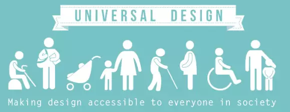
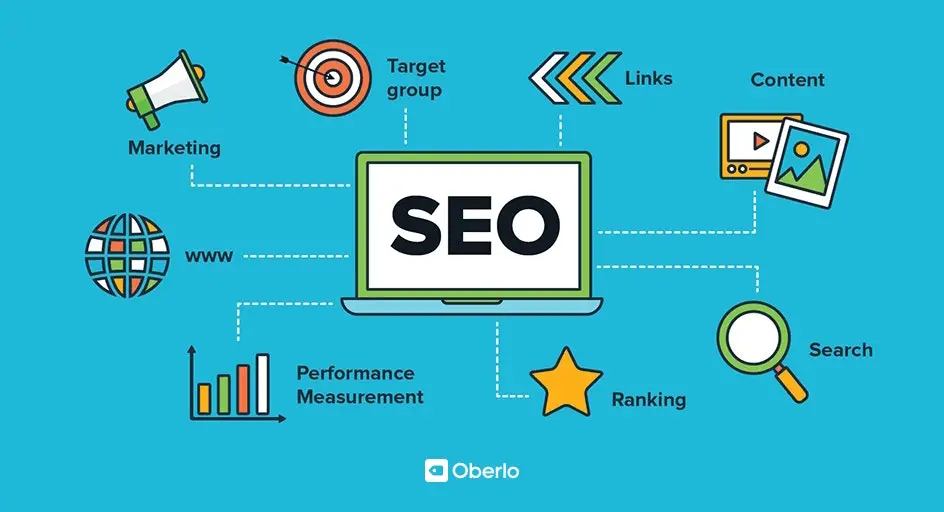

UU
Universell utforming er laget for å sikre at et produkt eller en tjeneste fungerer for brukere med varierende fysiske og mentale evner. Et design ses på som "universell" når personer med forskjellige fysiske, mentale eller intellektuelle evner kan bruke et produkt uten noen ekstra tilpasning eller modifikasjon.
Universell utforming er gunstig både for brukere og bedrifter, ettersom høyere brukertilgjengelighet og tilfredshet fører til bedre brukeroppbevaring. Fornøyde brukere er mer sannsynlig å anbefale produkter til venner og familie, noe som fører til en økning i markedsrekkevidden.

SEO
SEO er det å forbedre nettstedet ditt for å øke dets synlighet når folk søker etter produkter eller tjenester relatert til nettsiden din på Google, Bing og andre søkemotorer. Jo bedre synlighet sidene dine har i søkeresultatene, desto mer sannsynlig er det at du får oppmerksomhet og tiltrekker potensielle og eksisterende kunder til nettsiden din.
Søkemotorer som Google og Bing bruker roboter til å gjennomsøke sider på nettet, gå fra nettsted til nettsted, samle informasjon om disse sidene og sette dem i en indeks. Tenk på indeksen som et gigantisk bibliotek der en bibliotekar kan hente en bok (eller en nettside) for å hjelpe deg med å finne akkurat det du leter etter på den tiden.